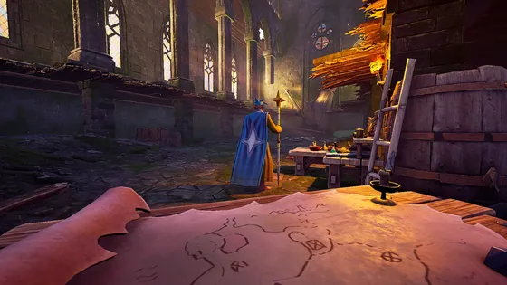
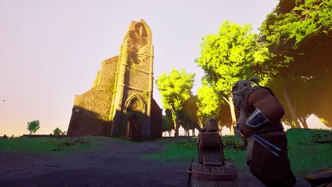
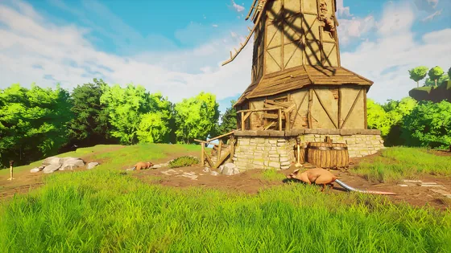
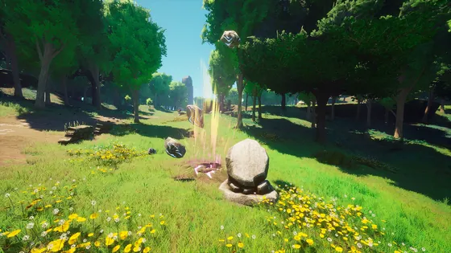
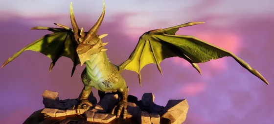
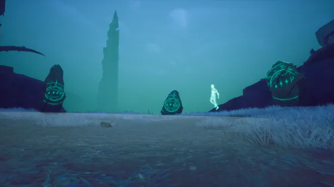
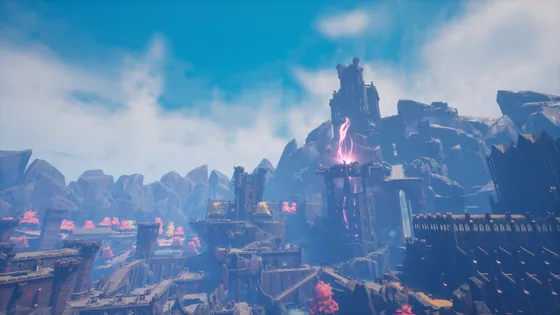
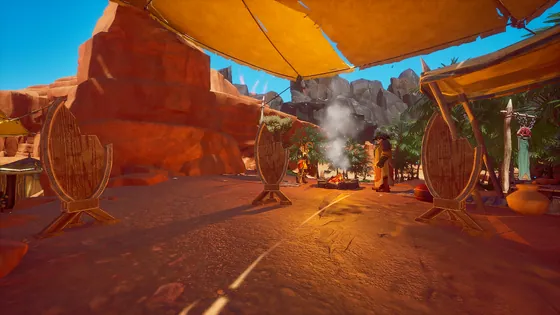
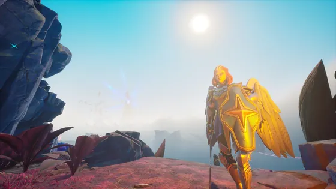

Main story Play these in order
-

New✓First Steps
Begin your adventure.
-

New✓Getting Started
Doric wants to teach you some survival basics.
-

New✓Ratcatcher
Vannaka wants to teach you the basics of hunting, fighting and cooking.
-

New✓Rune Mysteries
Zanik wants you to learn the basics of crafting runes.
-

New✓Dragon Slayer
Recruited with promises of glory, your first challenge is to defeat General Velgar.
-

New✓Withering Heights
Put an end to the horror of Fellhollow by defeating Imaru, the soul-devourer.
-

New✓Black Knight's Fortress
Uncover the secrets of Dowdun Reach in order to unlock your way through to the Umbral Sands.
-

New✓Icthlarin's Little Helper
Slay the tyrant dragon Fuzan and unite the Moon Garou along the way
-

New✓Regicide
Take the fight to Kuldra, and end this once and for all.